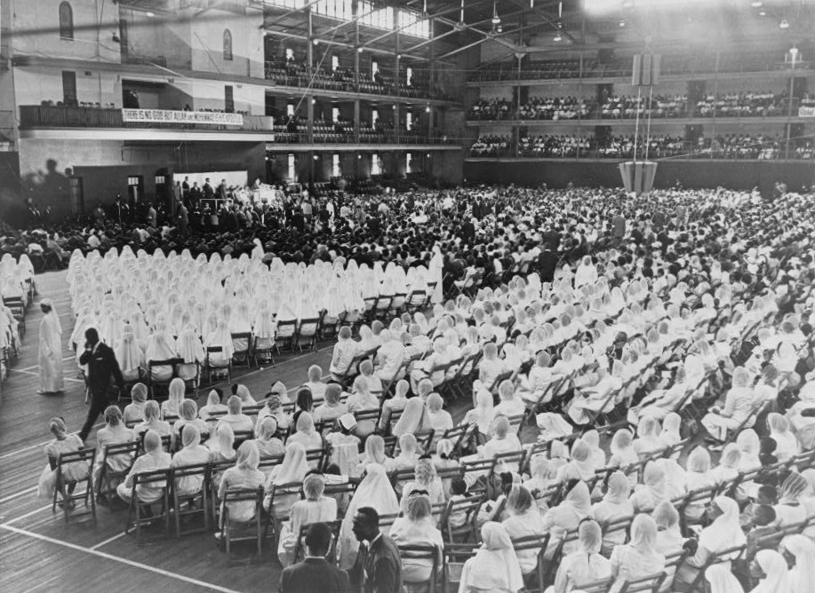
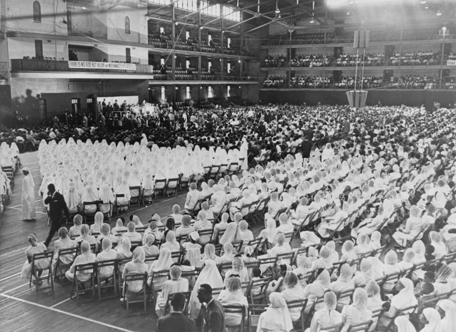

Malcolm X
Defender of Human Rights


Early Life
Malcolm X was born Malcolm Little on May 19, 1925 in Omaha, Nebraska. His father Earl Little was a itnerant baptist minister and a vehement advocate of Marcus Garvey. The local Ku Klux Klan in Omaha frequently harassed Malcolm's family because of his fathers preaching that was "stirring up the good'ole black folks" in their estimation. Consequently, the Little family moved to Lansing, Michighan this is where Malcolm grew up. Although the Little family relocated to Michighan, Earl Little's sermons that were disseminated to local African-American churchs did not cease.The contents in these sermons integrated Marcus Garvey's Pan-african/racial pride ideologies and rhetoric . Inevitably, the Little family was again subjected to harassment this time by the local white supremacist group called the Black Legionaries. In 1931, Malcolm's father was brutally murdered by the Black Legionaries. Authorities asserted that his death was an accident. The widowed Mrs.Little was denied the benefits that were included in Earl Little's insurance policy. The Little family would not be able to fathom the upcoming challanges that lay ahead.
Early Life
Malcolm X was born Malcolm Little on May 19, 1925, in Omaha, Nebraska. His father Earl Little was an itinerant baptist minister and a vehement advocate of Marcus Garvey. The local Ku Klux Klan in Omaha frequently harassed Malcolm's family because of his father's preaching that was "stirring up the good ole black folks" in their estimation. Consequently, the Little family moved to Lansing, Michigan this is where Malcolm grew up. Although the Little family relocated to Michigan, Earl Little's sermons that were disseminated to local African-American churches did not cease. The contents in these sermons integrated Marcus Garvey's Pan-African/racial pride ideologies and rhetoric. Inevitably, the Little family was again subjected to harassment this time by the local white supremacist group called the Black Legionaries. In 1931, Malcolm's father was brutally murdered by the Black Legionaries. Authorities asserted that his death was an accident. The widowed Mrs.Little was denied the benefits that were included in Earl Little's insurance policy.
Following the untimely death of her husband, Louise Little tried desperately to provide for her seven children but that effort would ultimately take a significant toll on her. Louise worked a variety of menial jobs, however when it was revealed who she widowed she would be terminated almost immediately. From a financial standpoint, the Little family at this point was impoverished, eventually, they came to rely upon state welfare. Moreover, state agency officers around this time period would frequently visit the Little household, constantly asserting Louise's incompetence in regard to taking care of her children. Inevitably, Louise suffered a complete mental breakdown and was committed to Kalamazoo State Hospital. Malcolm along with his siblings became wards of the state. Subsequently, they were separated and sent to foster homes.
Malcolm attended West Junior High School in Lansing and then Mason High School in Mason, Michigan, but left high school in 1941, before graduating. While in junior high school Malcolm excelled in his academics, however, what compelled him to drop out of school was a statement a white teacher made whenever Malcolm relayed to him his aspirations to become a lawyer. Stating that Malcolm's aspirations were "no realistic goal for a nigger". Consequently, Malcolm began to isolate himself from white people and longed to be amongst his own kind. This sentiment compelled him to reach out to his half-sister Ella Little-Collins. Ella lived in Roxbury, a largely African-American neighborhood of Boston and Malcolm longed to move in and live with her.
While in Boston, Malcolm held a variety of jobs initially working as a shoeshine boy at the Roseland State Ballroom. The Roseland State Ballroom which was in downtown Boston hosted a myriad of popular musical acts that performed this had a profound effect on Malcolm who was enamored by the performances. After incessant coaxing by Ella, Malcolm worked at a Townsend drugstore that was closer to home (Roxbury). The conversations amongst the African-American Bostonians revolved around the alluring glamour of New York's Harlem. Fascinated and enticed, Malcolm eventually moved to New York City's Harlem neighborhood in 1943, where he found employment on the New Haven Railroad while simultaneously engaging in illicit hustles such as drug dealing, gambling, racketeering, robbery, and pimping.
In late 1945, Malcolm returned to Boston perpetuating his illicit hustles with a crime syndicate of four other accomplices participating in burglaries aimed at wealthy white homes. In 1946, he was arrested while picking up a stolen watch he had left at a shop for repairs, and in February began serving an eight-to-ten-year sentence at Charlestown State Prison for larceny and breaking and entering. Two years later, Malcolm was transferred to Norfolk Prison Colony.
 


Nation of Islam
Malcolm X was born Malcolm Little on May 19, 1925 in Omaha, Nebraska. His father Earl Little was a itnerant baptist minister and a vehement advocate of Marcus Garvey. The local Ku Klux Klan in Omaha frequently harassed Malcolm's family because of his fathers preaching that was "stirring up the good'ole black folks" in their estimation. Consequently, the Little family moved to Lansing, Michighan this is where Malcolm grew up. Although the Little family relocated to Michighan, Earl Little's sermons that were disseminated to local African-American churchs did not cease.The contents in these sermons integrated Marcus Garvey's Pan-african/racial pride ideologies and rhetoric . Inevitably, the Little family was again subjected to harassment this time by the local white supremacist group called the Black Legionaries. In 1931, Malcolm's father was brutally murdered by the Black Legionaries. Authorities asserted that his death was an accident. The widowed Mrs.Little was denied the benefits that were included in Earl Little's insurance policy.